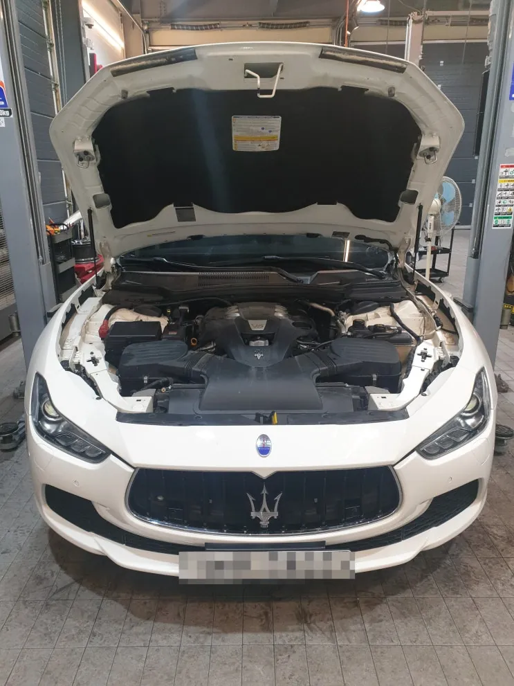
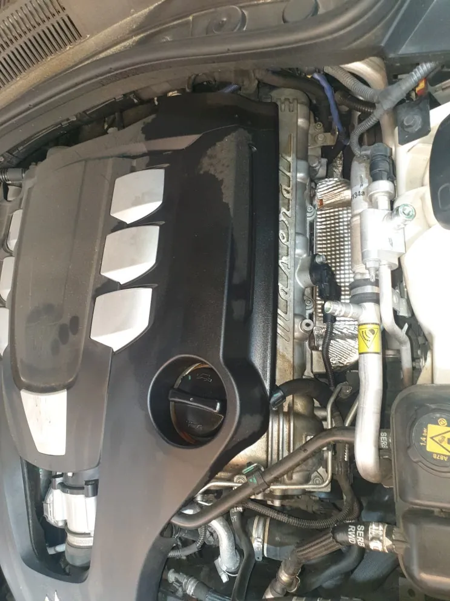
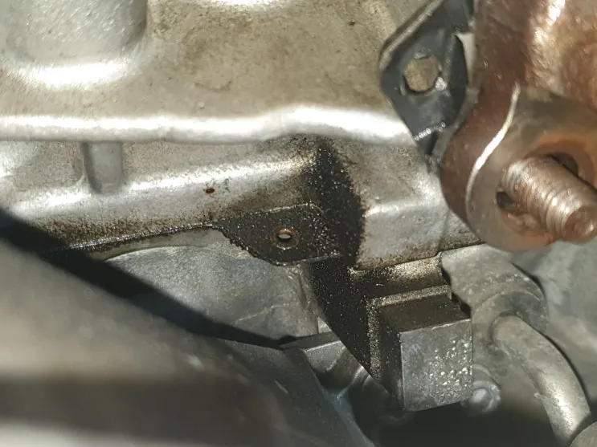
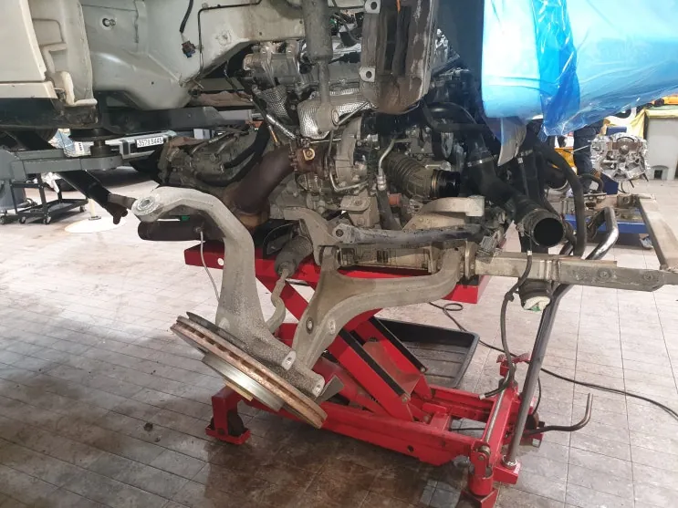
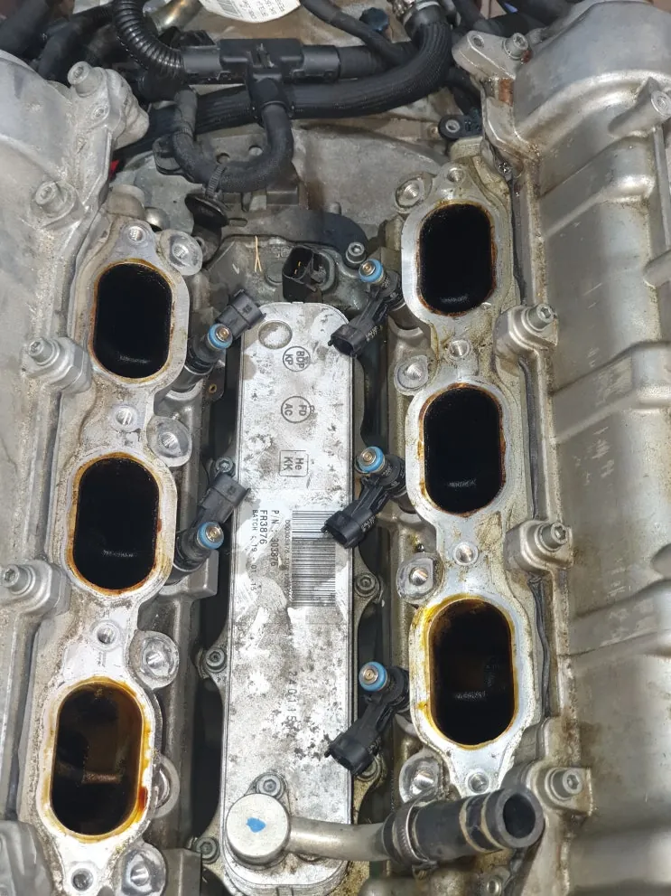
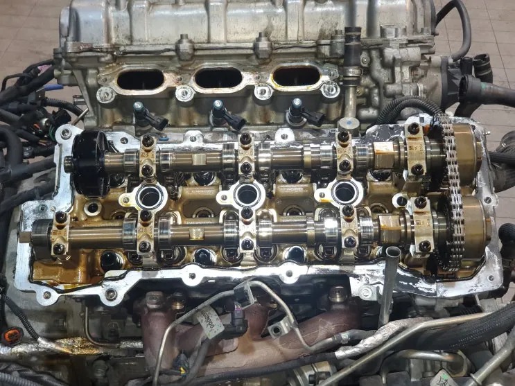
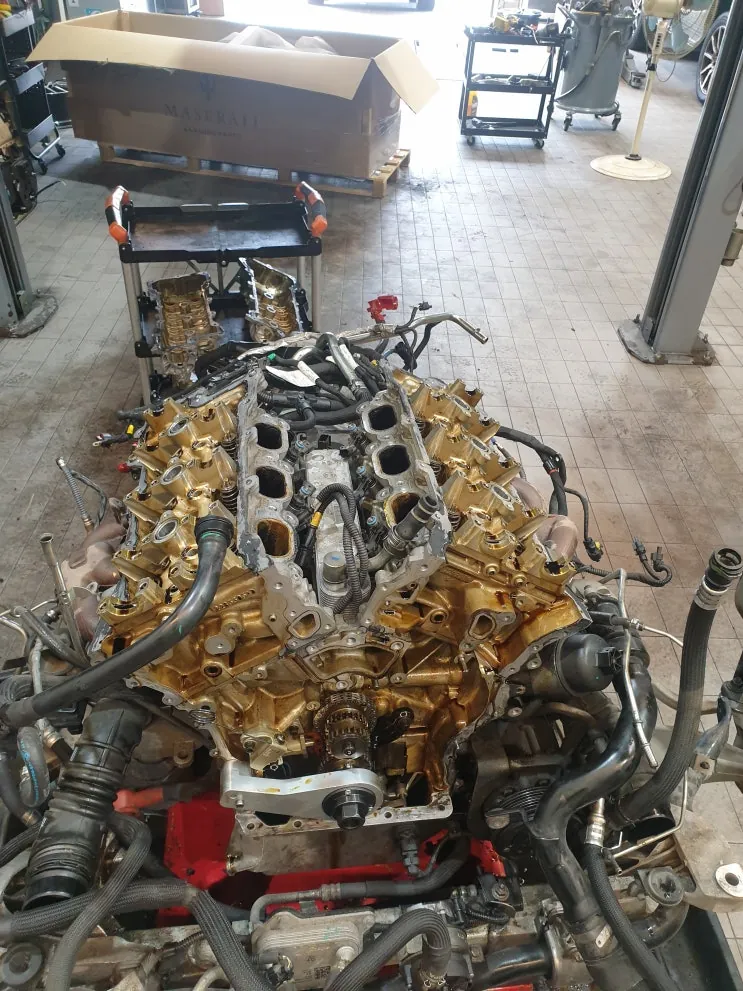
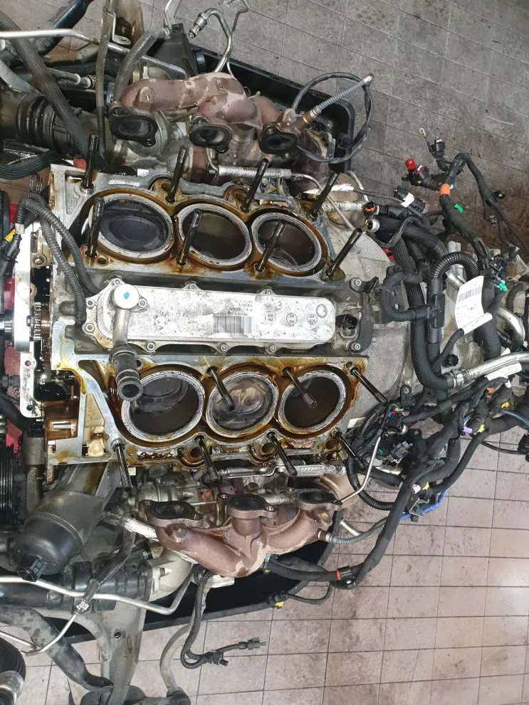

중고 기블리(M157) 엔진오일 누유 성능보증수리 — 헤드가스켓·프론트케이스·후방 리테이너
At a glance한눈에 보기
- 차량
- 마세라티 기블리
- 증상
- 엔진오일 누유 의심, 헤드가스켓 누유, 프론트케이스 누유, 후방 센터 리테이너 누유, 배기 매니폴드 누설
- 진단
- 중고로 구입한 기블리(M157) V6 가솔린은 헤드가스켓, 프론트케이스, 후방 센터 리테이너 등 여러 곳에서 엔진오일이 새고 있었습니다. 성능보증 접수와 보험사 확인 후 엔진을 내려 가스켓·리테이너를 교환했고, 비보증 항목인 V벨트 세트·점화플러그·오일 세퍼레이터도 상태를 확인해 교환했습니다.
- 작업
- 성능보증 접수·보험사 확인
- 엔진 탈거
- 헤드가스켓 교환
- 프론트케이스 세척·가스켓 교환
- 후방 센터 리테이너 교환
- 타이밍 정렬
- V벨트 세트 교환
- 점화플러그 교환
- 오일 세퍼레이터 교환
- 시운전

접수 경위
중고로 기블리(M157) 가솔린을 산 고객이 엔진오일 누유가 의심된다며 중고차 성능보증 접수를 문의했습니다. 1차 점검 뒤 보험사에서 수리 접수를 확인했고, 수리 범위를 정확히 진단한 다음 작업을 시작했습니다.
점검해 보니 오일 누유가 한 곳이 아니라 여러 곳에서 발견돼, 고객과 상담한 뒤 엔진 작업에 들어갔습니다.


누유 부위 확인과 엔진 탈거
헤드가스켓, 프론트케이스, 후방 센터 리테이너 등 곳곳에 오일 누유 흔적이 있었고, 배기 매니폴드 누설도 확인됐습니다. 작업 전 에어컨 냉매를 회수하고 엔진룸을 다시 한 번 점검했습니다.
흡기 매니폴드, 스로틀바디, 각종 파이프와 호스, 캠축 베리에이터를 차례로 떼어 내고 엔진을 내렸습니다. 분해한 뒤에는 헤드 내부 부품 손상과 압축 압력을 다시 확인했습니다. 점검과 작업 과정은 모두 사진으로 남겨 수리 후 고객에게 보여 드립니다.

가스켓·리테이너 교환
가스켓과 실런트 작업은 세척이 핵심이라, 접합면을 깨끗이 닦은 뒤 새 가스켓과 실런트로 교환했습니다. 헤드를 장착한 뒤 타이밍 체인과 타이밍 부품을 다시 정렬해 맞췄습니다. 타이밍이 어긋나면 부조, 혼합비 이상, 출력 저하가 생길 수 있습니다.
후방 센터 리테이너(리어 크랭크 리테이너)를 교환하기 위해 ZF 8단 변속기와 플라이휠을 떼어 냈고, 매뉴얼의 규정 토크로 조립했습니다. 출력이 높은 차량에서 자주 누유가 생기는 자리입니다.
V6 가솔린의 프론트케이스는 바깥 면은 실런트, 안쪽 냉각수 통로만 고무 가스켓으로 막는 구조입니다. 이 가스켓을 다시 쓰면 엔진오일과 냉각수가 섞일 수 있어, 케이스를 세척하고 가스켓을 새로 교환했습니다.


비보증 항목 점검
보증 대상이 아닌 부분도 점검해, 상태가 나쁜 소모품은 고객과 상의해 교환했습니다. V벨트 마모가 심해 아이들 베어링 2개, 텐셔너 베어링 1개, 발전기 벨트, 겉벨트를 세트로 교환했습니다. 점화플러그는 노후로 손상·마모돼 교환했고, 누유가 있던 오일 세퍼레이터도 교환했습니다. 파워스티어링 기어 누유도 확인됐습니다.
입고 때 달려 있던 엔진오일 필터는 정품과 모양·재질이 다른 애프터마켓 필터였습니다. 오일 압력이 제대로 서지 않는 필터는 윤활 문제로 이어질 수 있어 가솔린 모델은 정품 필터를 권합니다.

출고 점검
엔진 작업 후 작업 부위를 다시 점검하고 두 차례 시운전으로 확인했습니다. 처음에는 엔진 소음과 이상 증상을, 다음에는 엔진을 충분히 데운 상태에서 작업 부위와 다른 곳에 누유·누수가 없는지 봤습니다.
중고 마세라티를 산 뒤 누유나 고장이 보인다면 성능보증 대상인지부터 확인해 보세요. 성능점검 기록부와 증상 사진을 카톡으로 보내 주시면 접수 절차를 안내해 드립니다.

자주 묻는 질문
중고 마세라티 성능보증 수리는 어떤 순서로 진행되나요?
1차 점검으로 고장 부위를 확인하고 성능보증 접수를 한 뒤, 보험사가 수리 접수를 확인하면 수리 범위를 정확히 진단하고 작업합니다. 보증 대상이 아닌 항목은 고객과 따로 상의합니다.
성능보증 수리 중 보증이 안 되는 부품은 어떻게 하나요?
점검에서 상태가 나쁜 비보증 항목을 찾으면 고객에게 알리고 상의해 교환 여부를 정합니다. 이번 기블리는 V벨트 세트, 점화플러그, 오일 세퍼레이터를 함께 교환했습니다.
이 작업의 원문 기록: 네이버 블로그에서 보기
Consultation
마세라티 기블리, 비슷한 증상이 있나요?
증상 사진이나 경고등 화면을 카톡으로 먼저 보내 주시면 확인 후 안내해 드립니다. 전국 탁송 상담 가능.